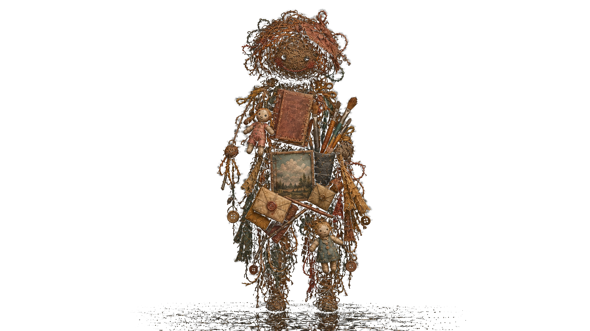

Product Designer · UI/UX · Web
我是佟心。从央美附中到大学动画设计系，经历了长期而系统的训练，培养了扎实的美学知识与设计思考。
现在，我在精进设计与开发能力的同时，也在使用 Codex 等工具制作多个 AI 工具。
我希望活用自己的创造力，在外部环境与 AI 技术不断变化的时代顺应变化、发挥价值；倾听用户与顾客的声音，创作他们真正需要的东西，并亲自参与从企划到落地的一系列流程。